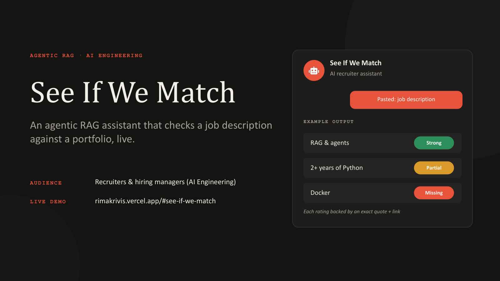

Featured · Solo build · Live on this site
See If We Match
An agentic RAG recruiter assistant. Paste a job description and it rates every requirement Strong, Partial or Missing, backed by an exact quote and a link to the evidence.